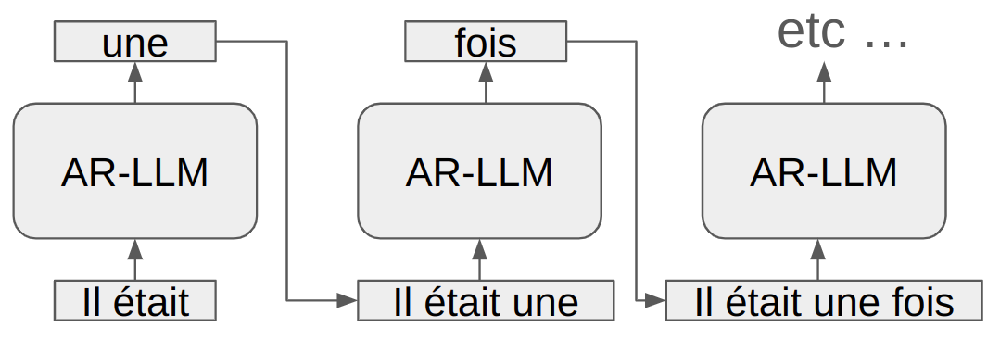

Arquitectura y particularidades del transformer#
Hasta ahora, hemos estudiado la arquitectura del descodificador del transformer, centrándonos únicamente en la atención enmascarada de múltiples cabezas (masked multi-head self-attention). En esta sección, exploraremos la intuición detrás del bloque codificador y la atención cruzada de múltiples cabezas (multi-head cross-attention).
Particularidad del texto#
Antes de abordar el bloque codificador, es importante entender por qué solo necesitábamos el bloque descodificador en los cuadernos anteriores. En la siguiente figura, el recuadro rojo muestra la parte del modelo que utilizamos (sin la segunda capa de atención de múltiples cabezas).

El texto se lee de izquierda a derecha, lo que explica por qué un modelo que genera texto utiliza esta misma dirección para procesar la información. Esto se conoce como un modelo autorregresivo. El modelo predice el siguiente token basándose en los tokens anteriores (incluidos en el contexto).
Durante el entrenamiento, se utiliza una máscara para evitar que el modelo “vea” los tokens ubicados después del token actual.
Sin embargo, este enfoque solo es óptimo para la generación de texto de izquierda a derecha. Existen numerosos casos en los que el enfoque autorregresivo no es el mejor. Entre estos casos se incluyen ciertas aplicaciones de PNL (Procesamiento de Lenguaje Natural), como la traducción o el análisis de emociones, así como enfoques en visión por computadora. Actualmente, la arquitectura del transformer ha demostrado su eficacia en la mayoría de los dominios que utilizan el deep learning, y en muchos casos no se trata de un enfoque autorregresivo.

AR-LLM significa auto regressive large language model (modelo de lenguaje grande autorregresivo).
El bloque codificador#
El bloque codificador es el bloque de la izquierda representado en la figura de la arquitectura (resaltado en rojo nuevamente).

La única diferencia con el bloque utilizado anteriormente es que la capa de atención de múltiples cabezas no está enmascarada. Para hacer una analogía con los cuadernos anteriores, esto significa que se utiliza una matriz completa en lugar de una matriz triangular inferior para el cálculo de la atención.
En la práctica, esto significa que cada token de la secuencia de entrada puede interactuar con todos los demás tokens (ubicados antes o después). En casos como el análisis de sentimientos, este es el enfoque preferido, ya que tenemos una secuencia conocida de entrada y buscamos predecir una etiqueta (positiva, negativa o neutral).
Nota sobre el análisis de sentimientos: En PNL, el análisis de sentimientos consiste en proporcionar un texto al modelo y solicitarle que determine el sentimiento asociado a ese texto. Por ejemplo, para una crítica de cine, queremos que el modelo prediga “negativo” para la crítica “Esta película es un auténtico desastre” y “positivo” para la crítica “Para mí, es la mejor película de todos los tiempos”.
Punto importante a considerar: Para predecir el sentimiento asociado a una frase, solo es necesario pasar una vez por el transformer. Para la generación de texto, es necesario recurrir al modelo después de cada token generado (por lo tanto, se pasa 10 veces por el modelo para generar 10 tokens).
Los modelos transformer basados únicamente en el bloque codificador tienen numerosas aplicaciones además de la detección de sentimientos: detección de spam, clasificación de documentos, extracción de entidades nombradas y recomendación de contenido. También veremos que, para el procesamiento de imágenes, se utiliza una variante del transformer que puede asemejarse a un codificador. En resumen, podríamos decir que el bloque codificador es adecuado para tareas de clasificación (detección y segmentación también para imágenes).
Arquitectura completa con atención cruzada#
Nos queda entender la utilidad de la arquitectura completa. Recordemos que el artículo “Attention Is All You Need”, que introduce el transformer, es un artículo sobre traducción automática.
Analicemos el problema de la traducción antes de comprender el funcionamiento de la arquitectura. En la traducción, disponemos de un texto en un idioma y queremos generar el mismo texto en otro idioma. Por lo tanto, por un lado, tenemos una parte de generación (es decir, el descodificador) y, por otro lado, una parte de codificación de la información disponible.
Debemos imaginar que la parte del descodificador que genera los tokens lo hace basándose tanto en los tokens generados previamente como interrogando a la parte codificada a través de la capa de atención cruzada.
Formalización matemática#
El codificador del transformer toma como entrada la secuencia fuente \(x\) y produce una representación contextual para cada token de esta secuencia: \(E = \text{Encoder}(x)\) Aquí, \(E\) es una matriz de representaciones contextuales para la secuencia fuente \(x\). Cada fila de \(E\) corresponde a una representación contextual \(e_i\) para el token \(x_i\).
El descodificador del transformer toma como entrada las representaciones contextuales \(E\) del codificador y genera la secuencia objetivo \(y\). En cada paso de generación, el descodificador produce un token \(y_t\) basándose en los tokens generados previamente y consultando al codificador a través de la capa de atención cruzada: \(y_t = \text{Decoder}(y_{<t}, E)\) Aquí, \(y_{<t}\) representa los tokens generados previamente hasta el paso \(t-1\). El proceso de generación utiliza tanto la autoatención (para capturar las dependencias secuenciales en la secuencia objetivo) como la atención cruzada (para incorporar información del codificador \(E\)).
La atención cruzada permite al descodificador consultar las representaciones contextuales \(E\) del codificador para obtener información relevante durante la generación de cada token \(y_t\). Se calcula como: \( \text{Cross-Attention}(Q, K, V) = \text{softmax}\left(\frac{QK^T}{\sqrt{d_k}}\right) V \) donde \(Q\) (consulta) son los embeddings de los tokens generados previamente por el descodificador, \(K\) (clave) y \(V\) (valor) son los embeddings del codificador \(E\), y \(d_k\) es la dimensión de los embeddings \(K\) para la normalización.
Al combinar estos elementos, el modelo transformer puede traducir eficientemente una secuencia de tokens de un idioma fuente a un idioma objetivo, utilizando mecanismos de atención y positional embeddings para mantener el orden secuencial y capturar dependencias a largo plazo.
Notas: El modelo descodificador intenta generar un token relevante en función de los tokens del codificador. Para ello, emite una consulta (query) y examina las claves (key) y valores (value) transmitidos por el codificador a través de la capa de atención cruzada. En un segundo momento, emite una consulta, una clave y un valor para encontrar un token coherente con respecto a los tokens que ha generado previamente a través de la capa de autoatención.
Ejemplos de uso#
La arquitectura completa se utiliza en casos en los que se busca generar un texto a partir de otro texto. Las aplicaciones más comunes son: la traducción, el resumen de texto, la corrección automática y la generación de texto guiada.
Notas: Sin duda, habrán observado que ChatGPT es capaz de realizar traducciones y resúmenes de texto. De hecho, el modelo es tan potente que logra realizar tareas que, en teoría, son difíciles para él. Está entrenado para predecir el siguiente token y, reflexionando un poco, podemos imaginar fácilmente que la tarea de predecir el siguiente token permite realizar todas las tareas de PNL.
Sin embargo, para modelos más limitados, es mejor ceñirse a una arquitectura adaptada a nuestro problema específico.